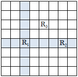

A rook is a piece used in the game of chess which is played on a board of square grids. A rook can only move vertically or horizontally from its current position and two rooks attack each other if one is on the path of the other. In the following figure, the dark squares represent the reachable locations for rook R1 from its current position. The figure also shows that the rook R1 and R2 are in attacking positions where R1 and R3 are not. R2 and R3 are also in non-attacking positions.

Now, given two numbers n and k, your job is to determine the number of ways one can put k rooks on an n x n chessboard so that no two of them are in attacking positions.
#include <bits/stdc++.h>
using namespace std;
int main ()
{
int t;
scanf("%d",&t);
int cas=1;
while (t--){
int n,i,k;
unsigned long long int ans=1;
scanf("%d %d",&n,&k);
printf("Case %d: ",cas++);
for (i=1;i<=k;i++){
ans=ans*n*n;
ans=ans/i;
n--;
}
cout<<ans<<endl;
}
return 0;
}